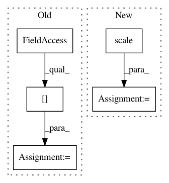

6f33c5ccb42043c28d390f5ff08cff9317060bc8,sklearn/neural_network/tests/test_mlp.py,,,#,30
Before Change
boston = load_boston()
Xboston = StandardScaler().fit_transform(boston.data)[: 200]
yboston = boston.target[:200]
regression_datasets = [(Xboston, yboston)]
iris = load_iris()
After Change
X_reg, y_reg = make_regression(n_samples=200, n_features=10, bias=20.,
noise=100., random_state=7)
y_reg = scale(y_reg)
regression_datasets = [(X_reg, y_reg)]
iris = load_iris()
In pattern: SUPERPATTERN
Frequency: 3
Non-data size: 5
Instances
Project Name: scikit-learn/scikit-learn
Commit Name: 6f33c5ccb42043c28d390f5ff08cff9317060bc8
Time: 2020-05-26
Author: jliu176@gmail.com
File Name: sklearn/neural_network/tests/test_mlp.py
Class Name:
Method Name:
Project Name: scikit-learn/scikit-learn
Commit Name: 5a33360ebb84c5f89035417c5aee042dab235127
Time: 2020-06-23
Author: jliu176@gmail.com
File Name: sklearn/ensemble/tests/test_gradient_boosting.py
Class Name:
Method Name:
Project Name: tsurumeso/waifu2x-chainer
Commit Name: f0a51308025e92263bd38e6ab756c7648ccd121a
Time: 2017-03-12
Author: nstm101339@gmail.com
File Name: lib/data_augmentation.py
Class Name:
Method Name: half